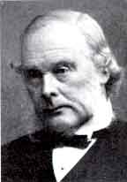

60 JOSEPH LISTER 1827-1912
Ahli
bedah Inggris Joseph Lister yang memperkenalkan penggunaan
antiseptik dalam operasi dilahirkan tahun 1827 di Upton,
Inggris. Tahun 1852 dia meraih gelar dokter dari Universitas
College London selaku mahasiswa yang cemerlang. Tahun 1861
dia jadi ahli bedah di rumah sakit Kerajaan Glasgow,
kedudukan yang dijabatnya selama delapan tahun. Terutama
dalam jangka masa ini dia mengembangkan metode antiseptik
dalam pembedahan.
Di rumah sakit itu Lister dibebani tugas di blok baru
barak operasi. Di sini dia dikejutkan oleh tingginya angka
kematian. Infeksi serius seperti kelumpuhan bagian anggota
badan karena kekurangan penyaluran darah merupakan kejadian
umum setelah operasi berlangsung. Lister mencoba menjaga
agar barak senantiasa dalam keadaan bersih, tetapi toh tidak
banyak menolong. Angka kematian masih tetap tinggi. Banyak
dokter menganggap uap udara tak sehat yang keluar dari tanah
"miasmas" (noxious vapors) yang berada di sekitar rumah
sakitlah yang menjadi penyebabnya. Pendapat ini tidak
memuaskan Lister.
Kemudian, di tahun 1865, dia baca siaran Louis Pasteur
yang memperkenalkannya kepada teori penyakit kuman. Ini
menyuguhkan Lister satu kunci gagasan baru. Andaikata benar
penyakit itu lantaran kuman, maka pencegah terbaik melawan
infeksi adalah membunuh kuman sebelum mencapai tempat luka
yang terbuka. Dengan menggunakan "Carbolik acid" selaku
pembunuh kuman, Lister dengan demikian telah melakukan satu
pola baru cara-cara antiseptik. Dia bukan saja membersihkan
tangan dengan cermat sebelum menghadapi pembedahan, tetapi
juga melakukan pengamatan terhadap peralatan yang digunakan
berikut pakaian-pakaian agar sepenuhnya bersih. Dia
betul-betul menyemprotkan "carbolik acid" yang berbau tajam
pencegah antiseptik ke udara dalam kamar operasi. Hasilnya
mengagumkan, angka kematian menurun. Antara tahun 1861-1865,
angka kematian rata-rata pada pria 45%, sedangkan menjelang
tahun 1869 menyusut jadi 15% saja.
Kertas kerja Lister pertama ihwal antiseptik dalam
pembedahan diterbitkan tahun 1867. Gagasannya tidak begitu
saja cepat diterima. Tetapi di tahun 1869 ia ditawari
kedudukan sebagai Kepala Klinik Bedah Universitas Edinburgh,
dan selama tujuh tahun bekerja di sana ketenarannya meluas.
Di tahun 1875 ia berkeliling di Jerman memberikan ceramah
tentang gagasan dan metodenya; dan pada tahun berikutnya,
dengan maksud yang sama ia berkeliling di Amerika Serikat.
Tetapi sebagian besar dokter di sana belum yakin. Sementara
itu, di tahun 1877 dia ditawari kedudukan jadi Kepala Bagian
Bedah Perguruan Tinggi Kerajaan di London yang di pegangnya
selama lebih dari lima belas tahun. Peragaan pembedahan
dengan antiseptiknya di London mengundang banyak perhatian
kalangan dunia kedokteran dan pemeriksaan orang terhadap
gagasannya pun semakin meluas. Di akhir hayatnya,
prinsip-prinsip pokok pembedahan antiseptik boleh dibilang
sudah diterima oleh hampir semua dokter.
Lister peroleh macam-macam penghargaan atas hasil
rintisannya. Dia menjadi ketua "Royal Society" selama lima
tahun, satu kedudukan yang terhormat. Dan tak kurang
pentingnya, dia menjadi dokter bedah pribadi Sri Ratu. Dia
kawin, tetapi tak punya anak barang seorang pun. Dia
menghembuskan nafas penghabisan di Walmer, Inggris.
Penemuan Lister tak syak lagi secara mendasar telah
merevolusionerkan bidang pembedahan dan telah menyelamatkan
rasa cemas orang akibat infeksi seperti terjadi di abad
lampau. Lebih jauh dari itu, pembedahan kini mampu mengatasi
kerja-kerja yang rumit yang tak akan pernah terjadi di masa
lampau. Misalnya, seabad yang lampau operasi yang menyangkut
pelubangan bagian dada tak pernah terbayangkan. Berada di
luar jangkauan pemikiran. Kendati teknik pembedahan
antiseptik kini berbeda dengan di jaman Lister, namun dasar
idenya serupa dan tak lain dari perluasan prinsip Lister
semata.
Orang bisa saja menuntut bahwa gagasan Lister amat jelas
bersamaan dengan apa yang diperbuat Pasteur sehingga
sebenarnya Lister tidak punya arti penting yang luar biasa.
Namun, sudahlah jelas, tulisan-tulisan Pasteur telah
dikembangkan dan dipopulerkan orang. Begitu pula, pemasukan
kedua nama Pasteur dan Lister dalam buku ini tidaklah
berarti telah terjadi penemuan serupa oleh dua orang yang
berbeda. Pemraktekan teori penyakit yang ditimbulkan oleh
kuman merupakan sesuatu yang amat penting sehingga meskipun
penghargaan itu dibagi-bagi, toh Pasteur, Leeuwenhoek,
Fleming dan Lister sepenuhnya akan termasuk dalam
daftar.
Tak mungkin ada keberatan penempatan Lister begitu tinggi
dalam urutan daftar buku ini. Hampir selama dua puluh tahun
sebelum Lister menggarap pekerjaannya, dokter, berkebangsaan
Hongaria Ignaz Semmelweiss (1818-1865) yang bekerja di rumah
sakit umum Wina telah memperagakan dengan jelas
keuntungan-keuntungan yang diperoleh prosedur antiseptik,
baik untuk pembedahan maupun kebidanan. Tetapi, meski
Semmelweiss menjadi gurubesar dan menulis buku yang bagus
sekali berisikan ide-idenya, tetapi secara keseluruhan dia
tidak diperhitungkan orang. Joseph Listerlah yang
tulisan-tulisannya, ceramah-ceramahnya dan peragaannya yang
benar-benar meyakinkan dunia kedokteran tentang pentingnya
antiseptik dalam praktek pengobatan.
|